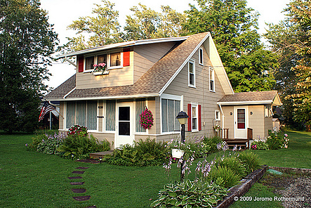

<div class="container mt-5 mb-5">
  <div class="row">
    <div class="col-md-8">
      <div class="card shadow">
        <div class="card-body">
          <h2>About Me</h2>
          <hr />
          <p>
            Former QA Manager turned Web Developer, recently graduated from the
            University of Arizona's intensive Full Stack Coding Bootcamp. While
            drawing on my 16 years of tech industry experience and passion for
            finding and solving problems, I am anxious to demonstrate and expand
            my skills in React, HTML, CSS, JavaScript, SQL and NoSQL databases,
            and Node.js in front end development.
          </p>
          <br />
          <p>
            I have spent my 16 year career so far working as QA in video games,
            starting as a tester working on PC and prototype Xbox games and
            working my way up to QA manager at a mobile games publisher in
            Germany. In Germany I managed and trained a team of QA Leads working
            on various projects with different first and third party development
            teams. I worked on many games through the years, but the most well
            known are from PopCap Games where I worked on many version of Plants
            vs. Zombies and the standalone iOS version of Bejeweled Blitz among
            others. Having gone as far as I wanted to on that career path I
            decided it was time to start over and so now I am looking into an
            exciting new career as a Web Developer.
          </p>
          <hr />
        </div>
      </div>
    </div>
    <div class="col-md-4">
      <div class="card shadow">
        <div class="card-body" id="homeImage">
          
        </div>
      </div>
    </div>
  </div>
</div>
